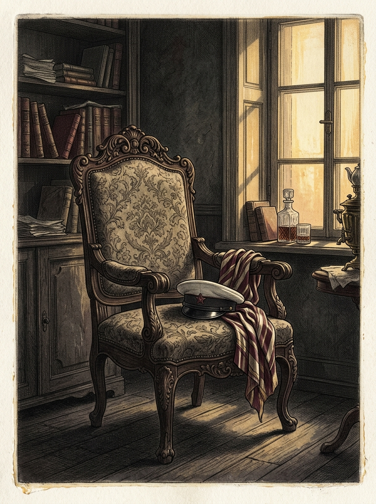

Содержание романа
Оглавление (12 разделов)
Часть первая · Старгородский лев
- Часть I, гл. I–IIIУездный город N и тайна Клавдии ИвановныУездный город N
- Часть I, гл. IV–VВеликий комбинаторСтаргород · Дворницкая дома № 7
- Часть I, гл. VI–VIIIБрильянтовый дым и «голубой воришка»Старгород · 2-й дом Старсобеса
- Часть I, гл. IX–XIАрхивариус, Полесов и «Меч и орало»Старгород · Кооперативная улица
- Часть I, гл. XII–XIVЗнойная женщина и путь в столицуСтаргород · Бакалейная лавка и вокзал
Часть вторая · В Москве
- Часть II, гл. XV–XVIIIОбщежитие Бертольда Шварца и музей мебелиМосква · Сивцев Вражек и Арбат
- Часть II, гл. XIX–XXIIЭллочка-людоедка и война с ВандербильдихойМосква · Варсонофьевский переулок
- Часть II, гл. XXIII–XXVИнженер Щукин, Изнуренков и крах на аукционеМосква · Петровка и Сретенка
- Часть II, гл. XXVI–XXIXСледы по стране и отплытие в ПоволжьеМосква · Редакция газеты «Станок» и вокзал